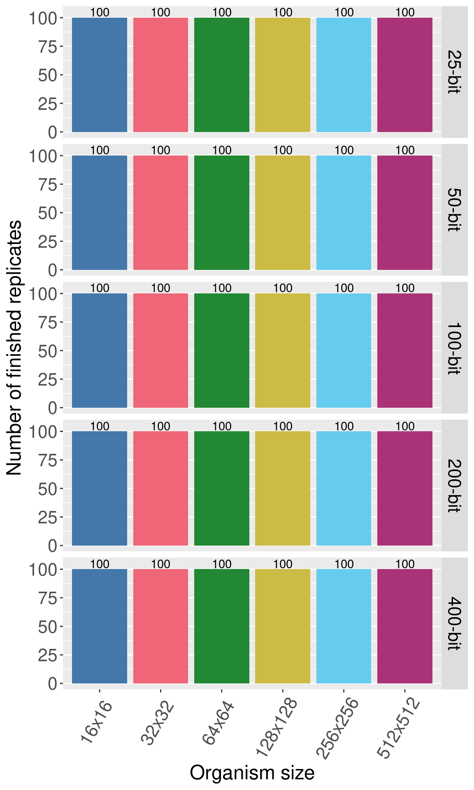
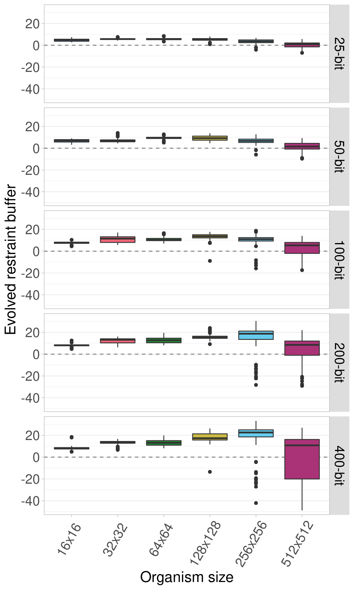
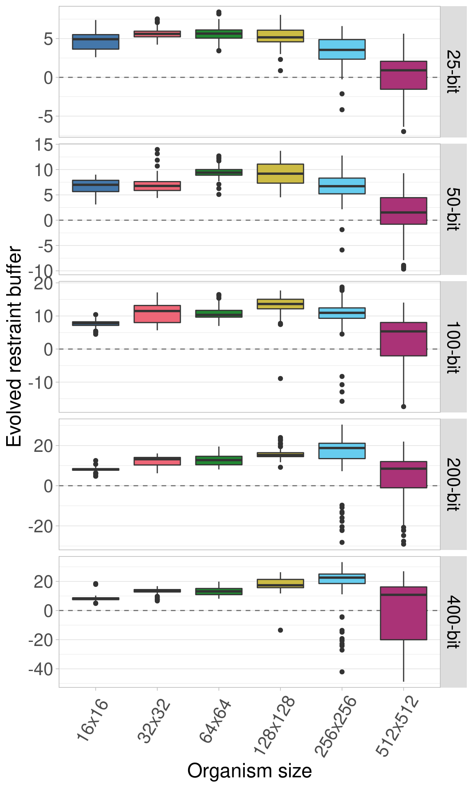

Section 8 Genome Length Control Experiment
In the genome length experiment, we observed that varying the genome length affects the evolution of organisms in two ways: 1) mutational pressure is reduced at the population level as genome length increases, and 2) longer genomes have a higher organism fitness at the same restraint buffer value. We wanted to test the effect of reduced mutational pressure by itself.
To accomplish this, we generated fitness data for organisms with 400-bit genomes. For smaller genome lengths, we reuse the 400-bit data by lining up restraint buffer values. Thus the difference in genome lengths simply changes the range of restraint buffer values available in the genome. The fitness data for 64x64 organisms is shown below, showing the range of each genome length.
Genome length control explainer
The configuration script and data for the experiment can be found under 2021_03_04__genome_length_control/ in the experiments directory of the git repository.
8.1 Data cleaning
Load necessary R libraries
Load the data and trim include only the final generation data for sizes 16x16 to 512x512.
# Load the data
df = read.csv( '../experiments/2021_03_04__genome_length_control/evolution/data/scraped_evolution_data_length_50.csv')
df = rbind(df, read.csv('../experiments/2021_03_04__genome_length_control/evolution/data/scraped_evolution_data_length_200.csv'))
df = rbind(df, read.csv('../experiments/2021_03_04__genome_length_control/evolution/data/scraped_evolution_data_length_100.csv'))
df = rbind(df, read.csv('../experiments/2021_03_04__genome_length_control/evolution/data/scraped_evolution_data_length_400.csv'))
df = rbind(df, read.csv('../experiments/2021_03_04__genome_length_control/evolution/data/scraped_evolution_data_length_25.csv'))
# Trim off NAs (artifiacts of how we scraped the data) and trim to only have gen 10,000
df2 = df[!is.na(df$MCSIZE) & df$generation == 10000,]
# Ignore data for size 8x8 and 1024x1024
df2 = df2[df2$MCSIZE != 8 & df2$MCSIZE != 1024,]We group and summarize the data to make to ensure all replicates are present.
# Group the data by size and summarize
data_grouped = dplyr::group_by(df2, MCSIZE, LENGTH)
data_summary = dplyr::summarize(data_grouped, mean_ones = mean(ave_ones), n = dplyr::n())We clean the data and create a few helper variables to make plotting easier.
# Calculate restraint value (x - 60% of the genome length)
df2$restraint_value = df2$ave_ones - (df2$LENGTH * 0.6)
# Make a nice, clean factor for size
df2$size_str = paste0(df2$MCSIZE, 'x', df2$MCSIZE)
df2$size_factor = factor(df2$size_str, levels = c('16x16', '32x32', '64x64', '128x128', '256x256', '512x512', '1024x1024'))
df2$size_factor_reversed = factor(df2$size_str, levels = rev(c('16x16', '32x32', '64x64', '128x128', '256x256', '512x512', '1024x1024')))
df2$length_str = paste0(df2$LENGTH, '-bit')
df2$length_factor = factor(df2$length_str, levels = c('25-bit', '50-bit', '100-bit', '200-bit', '400-bit'))
data_summary$size_str = paste0(data_summary$MCSIZE, 'x', data_summary$MCSIZE)
data_summary$size_factor = factor(data_summary$size_str, levels = c('16x16', '32x32', '64x64', '128x128', '256x256', '512x512', '1024x1024'))
data_summary$length_str = paste0(data_summary$LENGTH, '-bit')
data_summary$length_factor = factor(data_summary$length_str, levels = c('25-bit', '50-bit', '100-bit', '200-bit', '400-bit'))
# Create a map of colors we'll use to plot the different organism sizes
color_vec = as.character(khroma::color('bright')(7))
color_map = c(
'16x16' = color_vec[1],
'32x32' = color_vec[2],
'64x64' = color_vec[3],
'128x128' = color_vec[4],
'256x256' = color_vec[5],
'512x512' = color_vec[6],
'1024x1024' = color_vec[7]
)
# Set the sizes for text in plots
text_major_size = 18
text_minor_size = 16 8.2 Data integrity check
Now we plot the number of finished replicates for each treatment to make sure all data are present. Each row shows a different genome length (in bits). Each bar/color shows a different organism size. 
8.3 Aggregate plots
8.3.1 Facet by genome length
Here we plot all the data at once. Each row shows a different genome length and each boxplot shows a given organism size.

Here we plot the same data, only we allow the y-axis to vary between rows. 
8.3.2 Facet by organism size
Here we plot the same data again, only now each row shows an organims size while genome length varies on the x-axis.
Here is the identical plot but now we allow the y-axis to vary between the rows.
8.4 Single organism size plots
Here we plot each organism size independently, with the genome length on the x-axis.
8.4.1 Organism size 16x16
8.4.2 Organism size 32x32
8.4.3 Organism size 64x64
8.4.4 Organism size 128x128
8.4.5 Organism size 256x256
8.4.6 Organism size 512x512
8.5 Single genome length plots
Here we plot each genome length independently, with the organism size on the x-axis.
8.5.1 25-bit genomes
8.5.2 50-bit genomes
8.5.3 100-bit genomes
8.5.4 200-bit genomes
8.5.5 400-bit genomes
8.6 Statistics
Since organism size is our main point of comparison, we calculate statistics for each genome length.
First, we perform a Kruskal-Wallis test across all organism sizes to indicate if variance exists at that mutation rate. If variance exists, we then perfrm a pairwise Wilcoxon Rank-Sum test to show which pairs of organism sizes significantly differ. Finally, we perform Bonferroni-Holm corrections for multiple comparisons.
length_vec = c(25, 50, 100, 200, 400)
df_kruskal = data.frame(data = matrix(nrow = 0, ncol = 4))
colnames(df_kruskal) = c('genome_length', 'p_value', 'chi_squared', 'df')
for(genome_length in length_vec){
df_test = df2[df2$LENGTH == genome_length,]
res = kruskal.test(df_test$restraint_value ~ df_test$MCSIZE, df_test)
df_kruskal[nrow(df_kruskal) + 1,] = c(genome_length, res$p.value, as.numeric(res$statistic)[1], as.numeric(res$parameter)[1])
}
df_kruskal$less_0.01 = df_kruskal$p_value < 0.01
print(df_kruskal)## genome_length p_value chi_squared df less_0.01
## 1 25 9.945818e-62 295.3623 5 TRUE
## 2 50 1.677718e-69 331.5020 5 TRUE
## 3 100 1.870502e-63 303.3893 5 TRUE
## 4 200 7.717483e-60 286.5693 5 TRUE
## 5 400 3.667815e-58 278.7645 5 TRUEWe see that significant variation exists within each genome length, so we perform pariwise Wilcoxon tests on each to see which pairs of sizes are significantly different.
size_vec = c(16, 32, 64, 128, 256, 512)
length_vec = c(25, 50, 100, 200, 400)
for(genome_length in length_vec){
df_test = df2[df2$LENGTH == genome_length,]
df_wilcox = data.frame(data = matrix(nrow = 0, ncol = 6))
colnames(df_wilcox) = c('genome_length', 'size_a', 'size_b', 'p_value_corrected', 'p_value_raw', 'W')
for(size_idx_a in 1:(length(size_vec) - 1)){
size_a = size_vec[size_idx_a]
for(size_idx_b in (size_idx_a + 1):length(size_vec)){
size_b = size_vec[size_idx_b]
res = wilcox.test(df_test[df_test$MCSIZE == size_a,]$restraint_value, df_test[df_test$MCSIZE == size_b,]$restraint_value, alternative = 'two.sided')
df_wilcox[nrow(df_wilcox) + 1,] = c(genome_length, size_a, size_b, 0, res$p.value, as.numeric(res$statistic)[1])
}
}
df_wilcox$p_value_corrected = p.adjust(df_wilcox$p_value_raw, method = 'holm')
df_wilcox$less_0.01 = df_wilcox$p_value_corrected < 0.01
print(paste0('Genome length: ', genome_length))
print(df_wilcox)
}## [1] "Genome length: 25"
## genome_length size_a size_b p_value_corrected p_value_raw W less_0.01
## 1 25 16 32 3.071685e-07 4.388121e-08 2759.0 TRUE
## 2 25 16 64 2.643511e-06 4.405852e-07 2932.5 TRUE
## 3 25 16 128 2.296087e-02 7.653623e-03 3908.0 FALSE
## 4 25 16 256 4.468816e-06 8.937632e-07 7011.5 TRUE
## 5 25 16 512 1.225546e-26 1.021288e-27 9466.0 TRUE
## 6 25 32 64 8.795871e-01 8.795871e-01 4937.5 FALSE
## 7 25 32 128 1.781242e-02 4.453105e-03 6164.5 FALSE
## 8 25 32 256 8.642790e-19 7.857082e-20 8731.0 TRUE
## 9 25 32 512 1.295762e-31 8.638414e-33 9881.5 TRUE
## 10 25 64 128 2.755884e-02 1.377942e-02 6008.5 FALSE
## 11 25 64 256 8.087490e-17 8.087490e-18 8519.5 TRUE
## 12 25 64 512 7.929046e-31 5.663604e-32 9817.0 TRUE
## 13 25 128 256 1.175675e-11 1.469594e-12 7897.0 TRUE
## 14 25 128 512 9.159152e-29 7.045501e-30 9647.5 TRUE
## 15 25 256 512 9.448611e-16 1.049846e-16 8397.0 TRUE
## [1] "Genome length: 50"
## genome_length size_a size_b p_value_corrected p_value_raw W less_0.01
## 1 50 16 32 1.000000e+00 8.003516e-01 5104.0 FALSE
## 2 50 16 64 2.328801e-28 1.791386e-29 386.0 TRUE
## 3 50 16 128 8.546113e-13 1.220873e-13 1965.0 TRUE
## 4 50 16 256 1.000000e+00 6.285321e-01 5198.5 FALSE
## 5 50 16 512 2.425365e-23 2.425365e-24 9167.0 TRUE
## 6 50 32 64 3.889977e-24 3.536343e-25 757.0 TRUE
## 7 50 32 128 5.002137e-12 8.336895e-13 2071.0 TRUE
## 8 50 32 256 1.000000e+00 4.257132e-01 5326.5 FALSE
## 9 50 32 512 4.318415e-25 3.598679e-26 9331.5 TRUE
## 10 50 64 128 1.000000e+00 3.356981e-01 5394.5 FALSE
## 11 50 64 256 2.224828e-18 2.781035e-19 8674.5 TRUE
## 12 50 64 512 7.094686e-32 4.729791e-33 9902.0 TRUE
## 13 50 128 256 3.110374e-11 6.220748e-12 7814.0 TRUE
## 14 50 128 512 2.255738e-29 1.611242e-30 9700.0 TRUE
## 15 50 256 512 1.283931e-19 1.426590e-20 8806.0 TRUE
## [1] "Genome length: 100"
## genome_length size_a size_b p_value_corrected p_value_raw W less_0.01
## 1 100 16 32 2.153944e-14 2.692430e-15 1764.5 TRUE
## 2 100 16 64 2.038910e-29 1.359273e-30 294.0 TRUE
## 3 100 16 128 5.713029e-29 4.080735e-30 333.0 TRUE
## 4 100 16 256 1.058025e-17 1.175583e-18 1391.0 TRUE
## 5 100 16 512 3.828744e-06 9.571861e-07 7006.0 TRUE
## 6 100 32 64 1.000000e+00 7.740365e-01 5118.0 FALSE
## 7 100 32 128 1.546290e-09 2.577150e-10 2412.0 TRUE
## 8 100 32 256 1.000000e+00 9.522646e-01 4975.0 FALSE
## 9 100 32 512 3.415932e-19 3.105393e-20 8772.0 TRUE
## 10 100 64 128 4.799386e-14 6.856265e-15 1812.5 TRUE
## 11 100 64 256 1.000000e+00 3.718233e-01 4634.0 FALSE
## 12 100 64 512 1.603099e-22 1.335916e-23 9098.5 TRUE
## 13 100 128 256 1.394401e-08 2.788802e-09 7433.0 TRUE
## 14 100 128 512 1.814275e-28 1.395596e-29 9623.0 TRUE
## 15 100 256 512 4.379891e-18 4.379891e-19 8654.0 TRUE
## [1] "Genome length: 200"
## genome_length size_a size_b p_value_corrected p_value_raw W less_0.01
## 1 200 16 32 1.968049e-20 1.640041e-21 1101.0 TRUE
## 2 200 16 64 4.701928e-31 3.358520e-32 165.0 TRUE
## 3 200 16 128 4.881587e-33 3.254391e-34 8.0 TRUE
## 4 200 16 256 1.626707e-20 1.251313e-21 1089.5 TRUE
## 5 200 16 512 1.000000e+00 5.236501e-01 4738.5 FALSE
## 6 200 32 64 1.000000e+00 6.010522e-01 4785.5 FALSE
## 7 200 32 128 5.703607e-18 5.703607e-19 1358.0 TRUE
## 8 200 32 256 3.453153e-11 4.933076e-12 2172.5 TRUE
## 9 200 32 512 3.769973e-08 9.424932e-09 7350.0 TRUE
## 10 200 64 128 4.460538e-12 5.575672e-13 2048.5 TRUE
## 11 200 64 256 1.883098e-10 3.138497e-11 2282.0 TRUE
## 12 200 64 512 4.056747e-09 8.113493e-10 7514.5 TRUE
## 13 200 128 256 9.334382e-03 3.111461e-03 3789.5 TRUE
## 14 200 128 512 1.801191e-19 1.637446e-20 8800.0 TRUE
## 15 200 256 512 1.367136e-15 1.519040e-16 8379.0 TRUE
## [1] "Genome length: 400"
## genome_length size_a size_b p_value_corrected p_value_raw W less_0.01
## 1 400 16 32 1.535030e-25 1.180792e-26 626.0 TRUE
## 2 400 16 64 4.020270e-29 2.871622e-30 320.5 TRUE
## 3 400 16 128 2.139736e-30 1.426491e-31 215.0 TRUE
## 4 400 16 256 3.047545e-19 2.770496e-20 1223.0 TRUE
## 5 400 16 512 6.790903e-02 1.697726e-02 4022.5 FALSE
## 6 400 32 64 7.702973e-01 7.702973e-01 5120.0 FALSE
## 7 400 32 128 2.353267e-24 1.961056e-25 734.0 TRUE
## 8 400 32 256 3.922288e-16 4.358098e-17 1560.5 TRUE
## 9 400 32 512 7.607630e-02 3.803815e-02 5849.5 FALSE
## 10 400 64 128 3.142885e-18 3.142885e-19 1331.0 TRUE
## 11 400 64 256 6.103704e-16 7.629630e-17 1587.5 TRUE
## 12 400 64 512 6.790903e-02 2.149175e-02 5941.5 FALSE
## 13 400 128 256 2.106836e-06 4.213672e-07 2929.0 TRUE
## 14 400 128 512 3.669212e-11 6.115353e-12 7815.0 TRUE
## 15 400 256 512 9.548472e-15 1.364067e-15 8270.0 TRUE